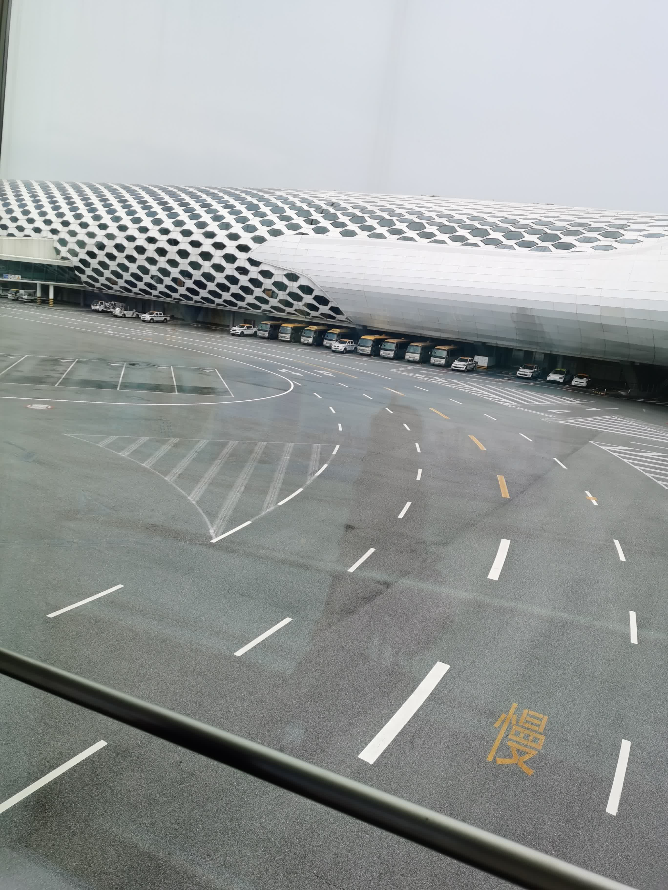
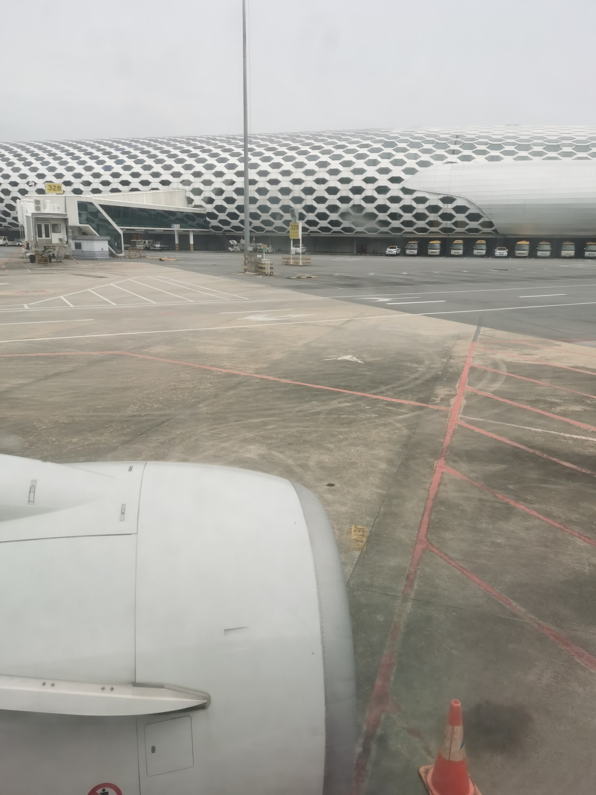
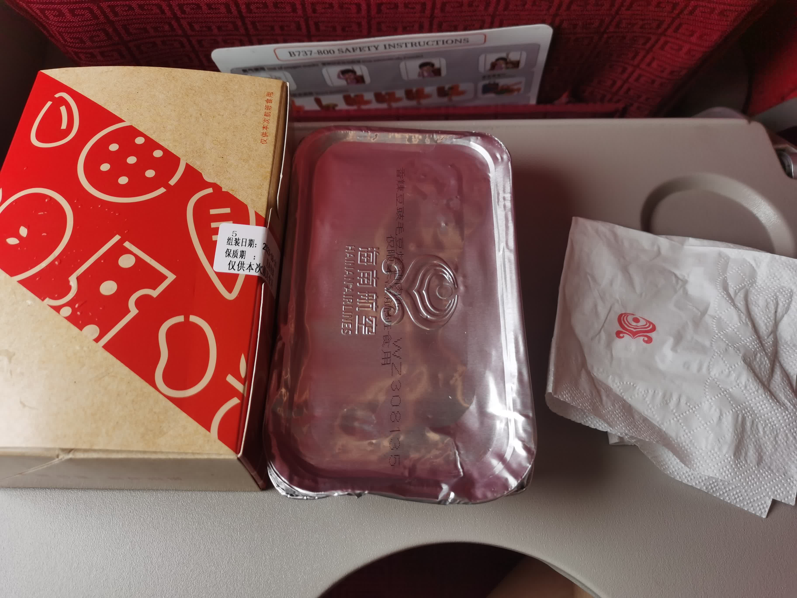
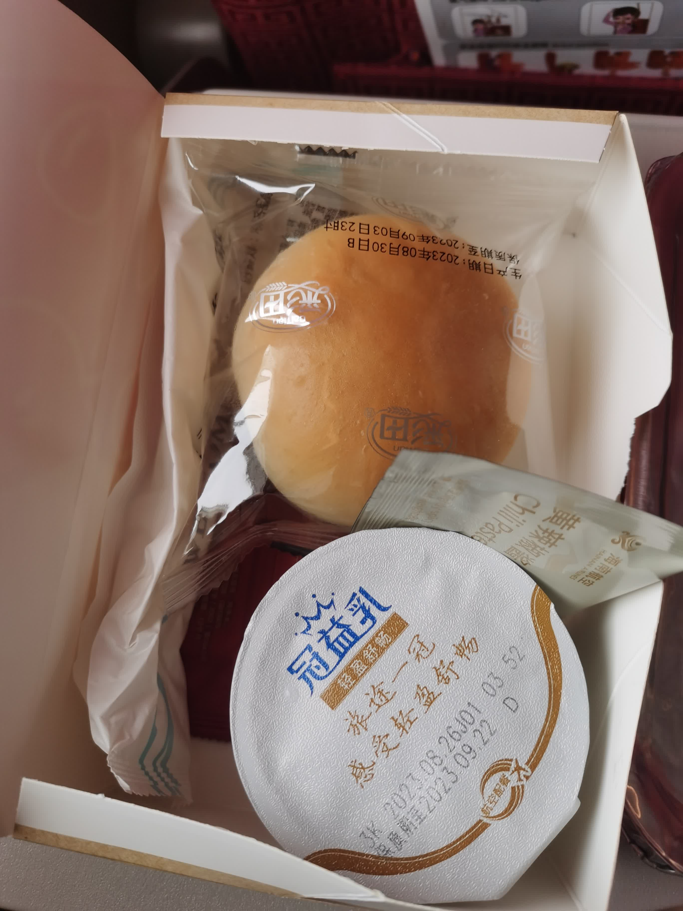
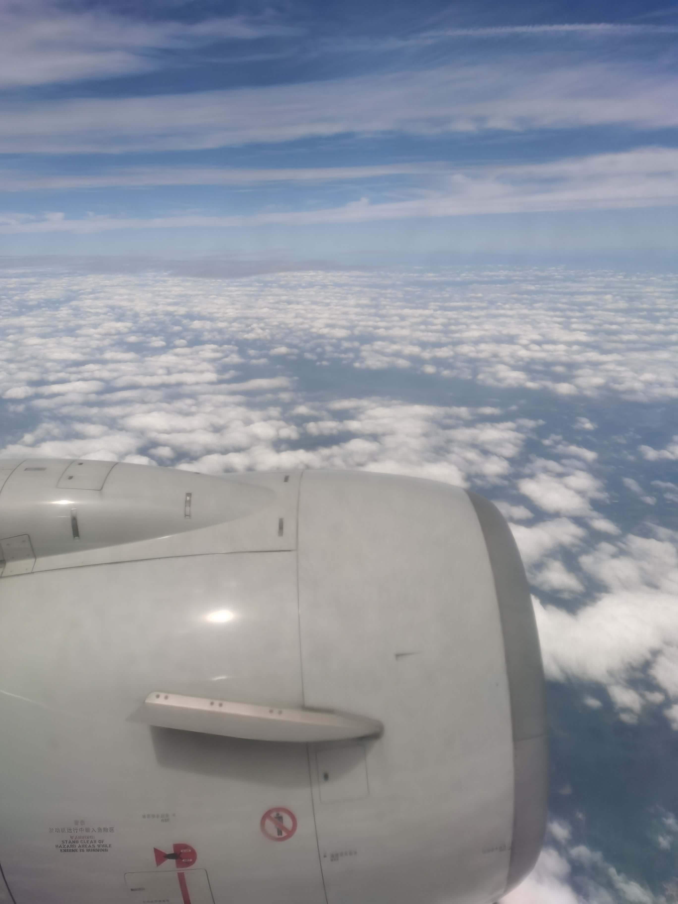
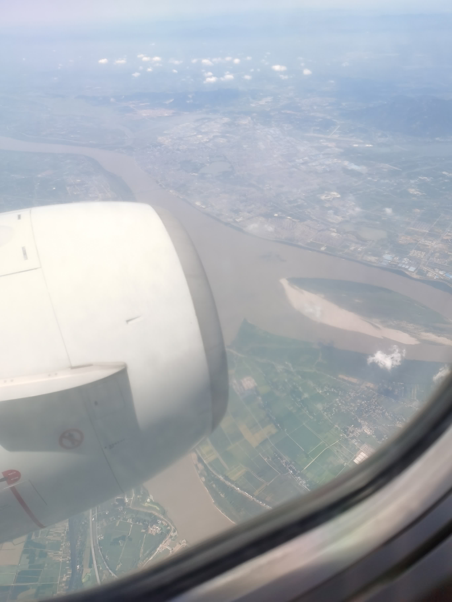
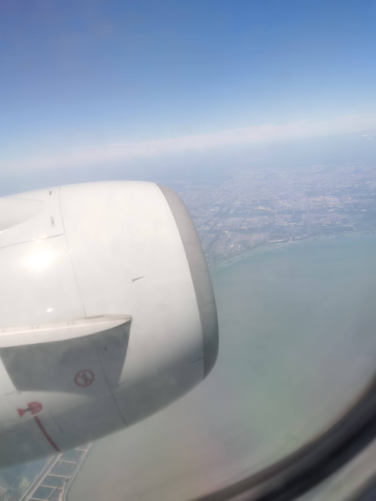
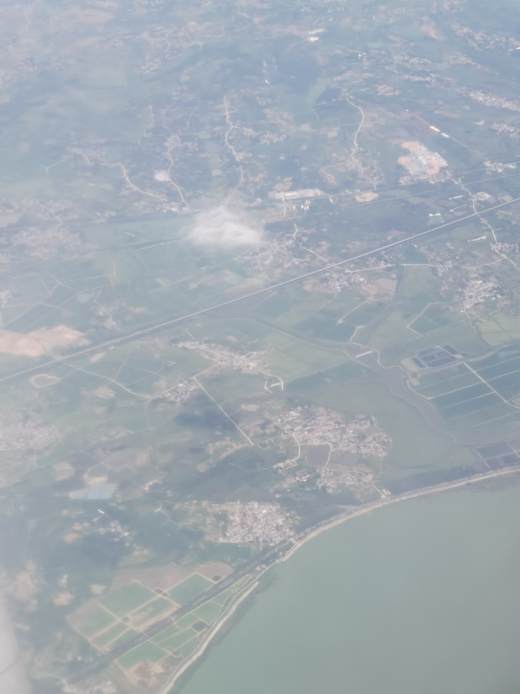
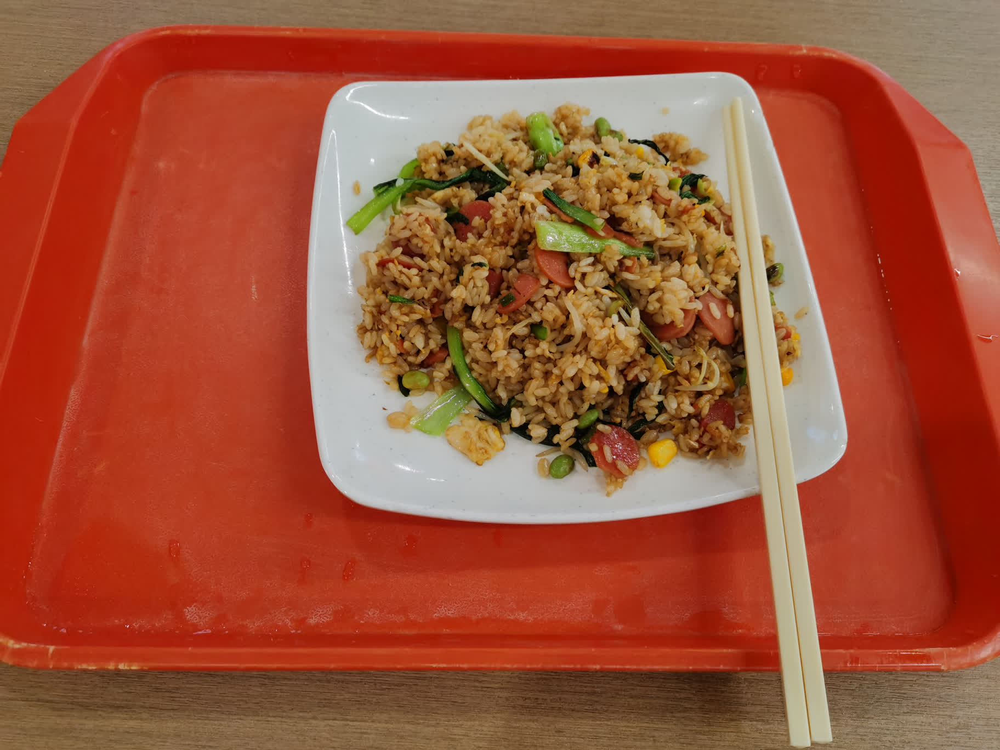

南京之旅
本来昨天就能写一点了，但是拖延症，最终还是留到二号写。
飞机
从小到大都没做过飞机 ✈️，这次倒是真真切切体会到了。
同时除了去过一次香港，我也没离开过广东省，也算是开拓一下眼界吧。
卡着点，差点航班就因为台风「苏拉」停飞了。饶是如此，也推迟了一会。


飞机起飞前拍的。飞机起飞时也录了个相，只不过传视频体积太大了，因此就算了。
坐飞机的感受也确实与其它交通工具大相径庭。刺激程度其实是不如游乐场的一些项目的（不过也是有机会的，虽然可能只有一次）。
还有个特点就是吵，飞机噪音还是蛮大的。
一开始我想的是估计看风景也能看完一程，实际情况是到高空后一片白茫茫，看得昏昏欲睡。
飞机上还有个 WiFi 可以看剧之类的。我想着拿笔记本看看《狂飙》，结果电脑显示版权原因什么的，要我下 Chrome（还给了个安装包），只得放弃。又想用手机看看，不过耳机放在行李架的书包里的，也只能打消了念头。


飞机餐。还是不错的，不过量有点少。



随便拍的一点机上风景。

拍了一个云，在地上形成了一片阴影。虽然非常正常，但是我的感性还是感觉一点不可思议。
摆渡车。这个词第一次见还是高三英语课，我那时还不知道摆渡车啥意思。现在算是亲眼目睹了。
飞机降落提前了半个钟左右，不到两个小时就从「深圳宝安国际机场」飞到了「南京禄口国际机场」，还是很迅速的。不过票价也很贵，900+ 元，肉疼。
降落前除了感觉飞机高度在不断降低外，丝毫没察觉到降落的迹象：因为周围全都是像农田的样子。也许是在深圳呆久了，也许这么多农田才是常态。
另外去了宝安机场才发现机场原来这么大，难怪不是每座城市都有机场，心里油然有种「何不食肉糜」的羞愧感。
然后就是坐地铁去酒店了。
地铁
少了粤语报站，有点不习惯，虽然我听不懂粤语。
座位是纯色塑料座椅，深圳地铁倒是金属座椅，坐上去非常凉。
深圳地铁一些电视坏了，但几周都还能看到这个现象。南京地铁目前还没看到。
南京地铁报站好奇怪，说的是「xx 站到了，请下车」。并不是每个人都要下车吧，我记得深圳地铁则是指出了需要下车的下车。英文则没有「请下车」这样的话。
机场的 S1 线站与站之间格外遥远，我坐得都睡着了（不过坐到终点站也不怕）。然后转了一条线，又相当密集了，一分钟就能到下一站。我看了看南京地铁线路图，感觉比深圳的站多得多。
南京
目前来看，南京和深圳气候上没啥区别，甚至深圳还更凉快一点，毕竟最近刮台风。不过我应该能在南京第一次见雪。
还有个特点就是电瓶车、摩托车特别多，超级多。我不知道交通规则，看好多车走一条路，即使有导航指引我也徘徊了好一会。回去查发现原来行人可以走非机动车道。
南京大学
报道后领了校园卡，然后就去宿舍整理了。
宿舍有个手提袋，不大，感觉不如深中「梦想与荣光」漂亮。里面有一些册子、雨伞和校卡壳。
校园里超级多人来推销所谓「校园宽带」「超市优惠劵」，还好我一是提前了解，二是没钱，没有上当受骗。
锐评一下南大宿舍，不如西校区，果真是「由奢入俭难」。
- 床位联通，导致一边的晃动会传导到另一边
- 桌子空间小，看了看朋友圈的宿舍，有一些还是让我很眼馋的
- 洗浴功能集成到厕所。这个倒比西校区好，因为比西校区大。但是西校区有两个厕所（六人间四人），这里只有一个（虽然很正常，只是对比一下）。而且这里只有一个洗手台，泥岗和东校区是三个（两个四人间），西校区是两个（六人间四人）
- 两床共用一梯，而且在梯子旁边护栏有空隙。我已经几次踩空了差点摔倒，反人类设计。看了看上交似乎也是这样的。每两个人就少一个梯子，一个学校就少了几千个梯子，省了不知道多少钱，可真好呐
- 厕所、洗手台与宿舍没有明确阻拦。无论是泥岗晒布抑或是西校区，都是有个门能阻拦的。这导致了有人上完厕所不关门后宿舍会奇臭无比。而且上厕所、洗手或洗漱的话会打扰到舍友，尤其是在早上晚上
- 阳台小
- 饮水机一层（似乎）只有一个（还离我很远），而且是要付费，接满一壶温水至少要 2 分钱。而且接水还要插卡，太麻烦了，后面都用 NFC 了不怎么带卡了。
果然深中的条件是顶配，离校了才知校好。所以我也不是在抱怨什么，南大宿舍也很不错了，虽然比深中差，但我还是能接受的，只是简单对比一下。
不过我大二大概率去苏州了，条件也许能改善。
然后是吃的。去年 5 月做志愿时去过一个大学食堂吃饭，那是相当的贵啊。结果南大的食堂物价比我想象的要便宜。
15.9 元，吃了一口。左边有根丝，然后拍完照后一会右边那块肉爬出来个虫，挣扎一会后就不动了，我就换了一份。真糟心。

晚餐 12 元。分量比深中的少一点，但是味道非常好。
好像也没啥可以写的了，那就这样吧。